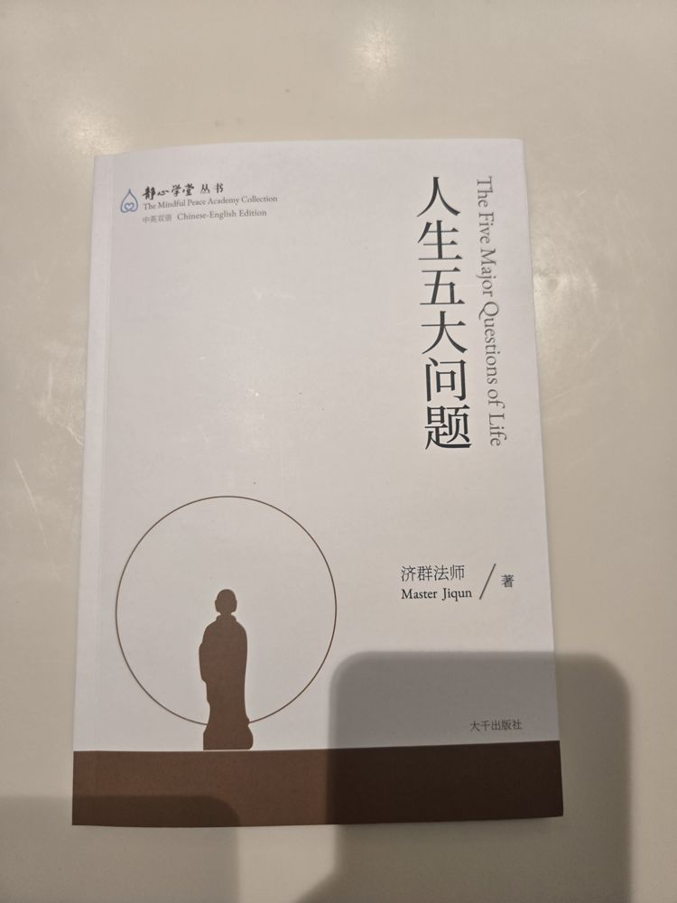
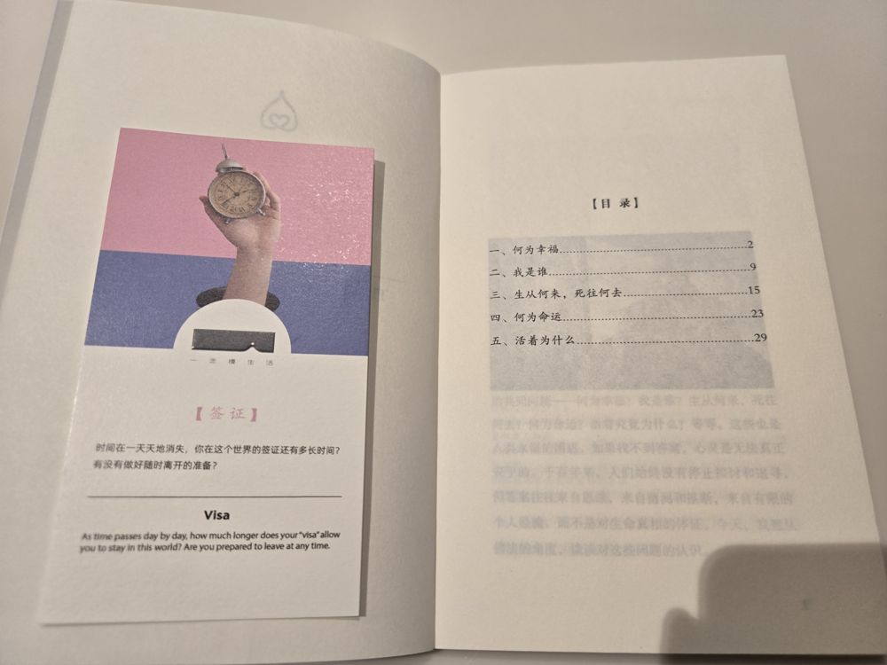
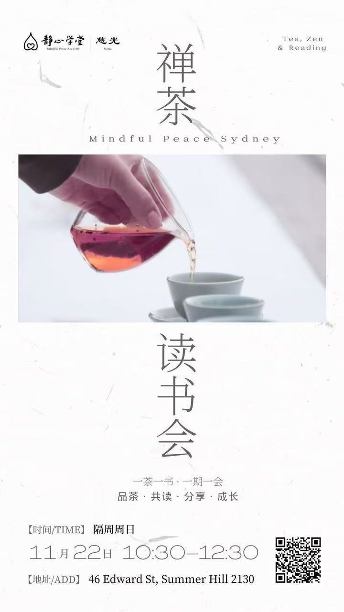

公益推荐 · 身心修养
禅茶读书会 🍵
悉尼静心学堂 · 正心小院 Summer Hill
一盏清茶，品人生百味；一本好书，照见内心智慧。
在茶香与书香之间，放慢脚步，安住当下。以茶会友，以书启慧，让忙碌的生活多一份宁静与自在。
一茶一书 · 一期一会 品茶 · 共读 · 分享 · 成长
Grace 的推荐
 一群素不相识的人，因为共同的爱好、相近的想法，围坐在一起。
一群素不相识的人，因为共同的爱好、相近的想法，围坐在一起。
就像我的座驾 BYD：Build Your Dream。每个人心里都有自己的梦想。我们不是为别人而活，谁也不知道明天和意外哪个先来，所以珍惜当下，做想做的事，去追自己的梦。这是我对静心茶社的理解。
在这个物欲横流、AI 改变一切的时代，和师兄们一起共勉：静下来，喝一杯茶，读一段文字，让心得到片刻的宁静。这里有中文也有英文，自由随意，让人真正放松。
— Grace Lei Zhang
我们在读
《人生五大问题》· 济群法师著 · 静心学堂丛书，中英双语


活动时间
下一场 · 欢迎参加
11月22日（周日）
时间上午 10:30–12:30
频率隔周周日 10:30–12:30
后续日期以主办方通知为准
后续日期以主办方通知为准
地点正心小院
Level 5, 46 Edward St
Summer Hill NSW 2130
Level 5, 46 Edward St
Summer Hill NSW 2130
语言中文 · English
主办悉尼静心学堂 Mindful Peace Academy
报名扫海报二维码联系主办方，
或先问 Grace
WhatsApp 问 Grace
在 Google 地图打开 ›
或先问 Grace
到场时请告知您由 Grace Rock 推荐。

海报：悉尼静心学堂。
正心小院还有
工作日还有正念抄经、正念咖啡读书会、静心梵唱、正念拍打、静心素食、正念球、正念瑜伽等活动。每周安排不同，请向主办方查询。

示例：11月16–22日一周活动表
往期活动
往期回顾

蓝花楹下 · 心聚同行｜春日户外团建
时间2026年11月8日（周日）
地点Parramatta Park · Wistaria Gardens
我参加了，非常好。正念球（太极球）、静心禅茶、素食野餐、静心插花，在蓝花楹下清心养性的一天。
说明
公益推荐：本活动由悉尼静心学堂主办，Grace Rock 只做公益推荐，不收取任何费用。活动安排以主办方为准。